Bambu LabCoreXY
Bambu Lab X1-Carbon
Enclosed CoreXY 256 mm cube prosumer machine with carbon-fibre X rails, micro-lidar first-layer inspection and a 110 C bed.
Build volume
Read guide 256 x 256 x 256 mm advertised (manufacturer figure)
Find your next machine.
Understand the one you have.
Explore desktop, resin and production printers. Start with a model, then look closer at its hardware, software and sourced specifications.
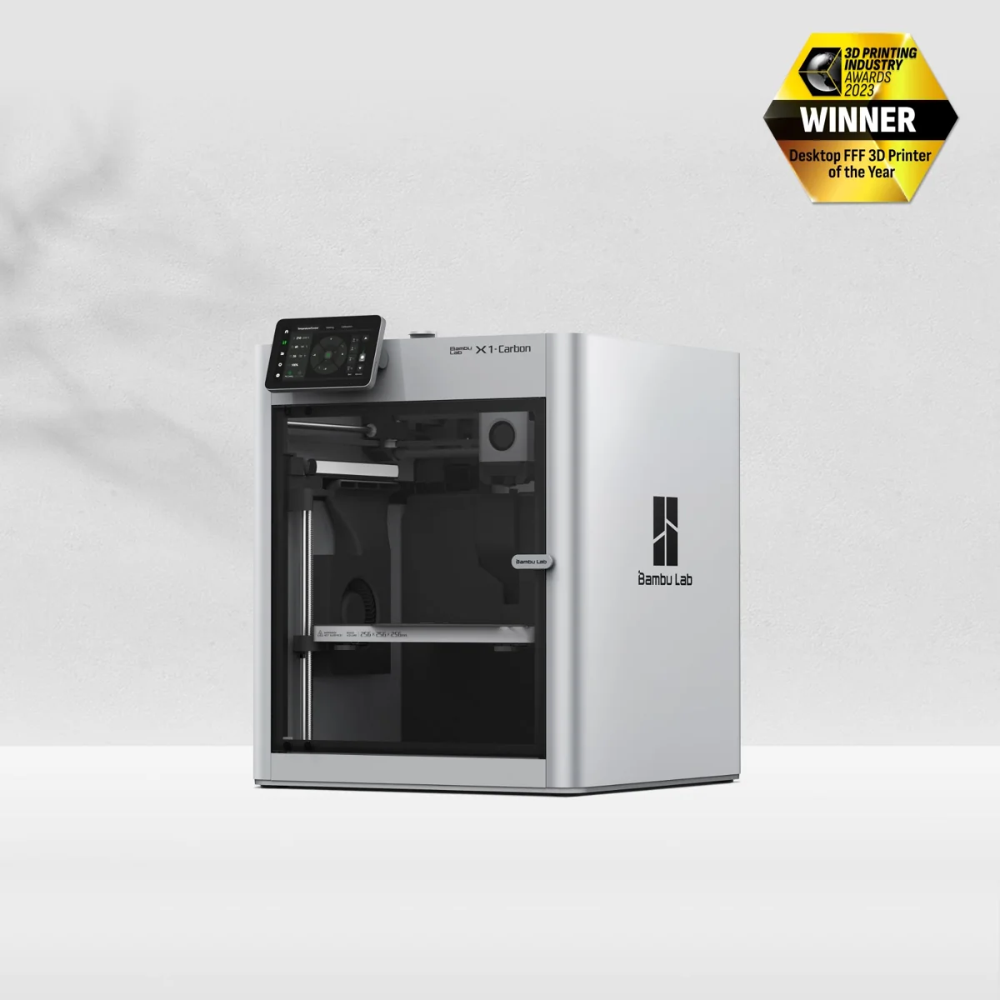
132 of 132 printers
One guide from each group.
A starting point for exploring the library.
Enclosed CoreXY 256 mm cube prosumer machine with carbon-fibre X rails, micro-lidar first-layer inspection and a 110 C bed.
256 x 256 x 256 mm advertised (manufacturer figure)

Cartesian bed-slinger with a load-cell nozzle probe, quick-swap high-flow nozzle and 360-degree part cooling, sold assembled or as a kit.
250 x 210 x 220 mm (manufacturer figure)
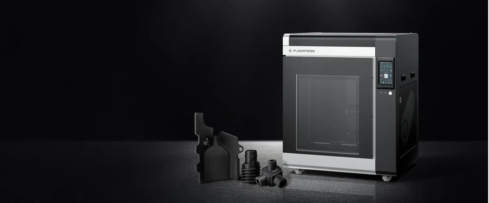
Large enclosed IDEX machine with interchangeable extruder modules, a 65 °C chamber and a 130 °C bed.
400 x 350 x 500 mm
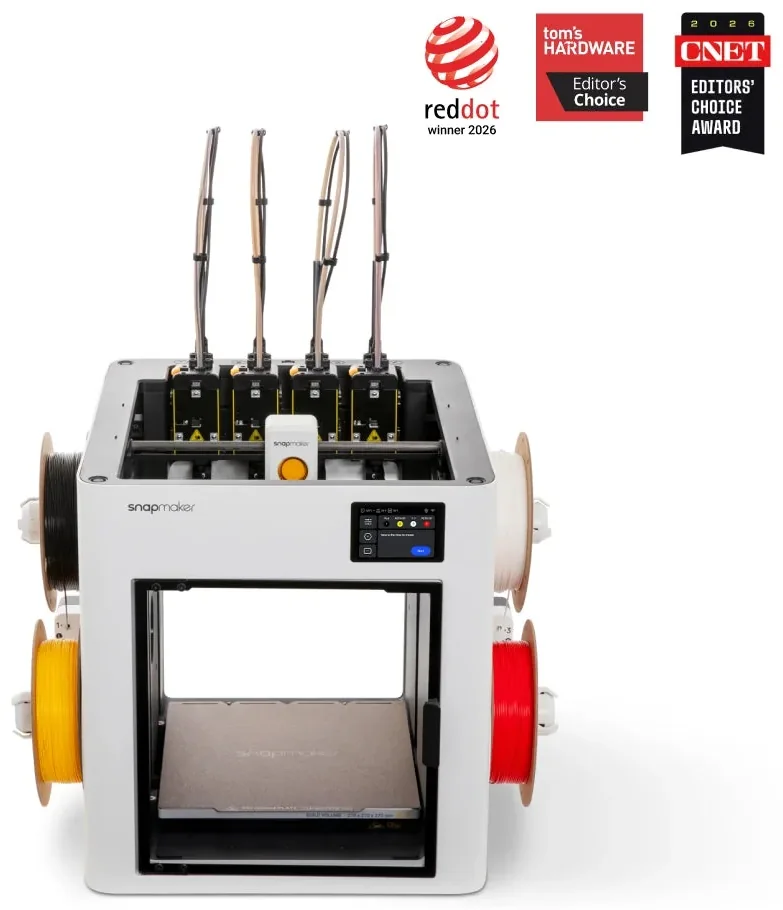
Four-toolhead changer with RFID filament recognition, a chamber camera and Klipper firmware.
270 x 270 x 270 mm
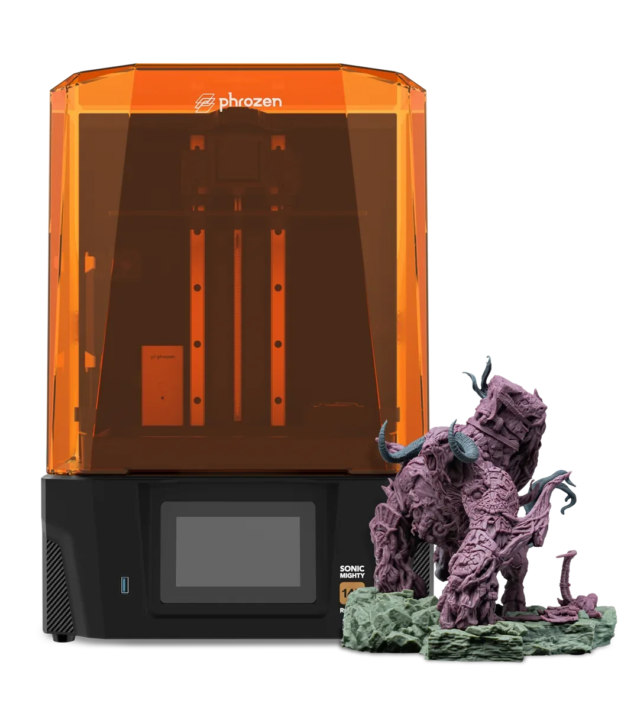
10.1-inch 14K MSLA printer with a built-in heater, plug-in air purifier and a ball-screw dual-rail Z axis.
223 x 126 x 235 mm
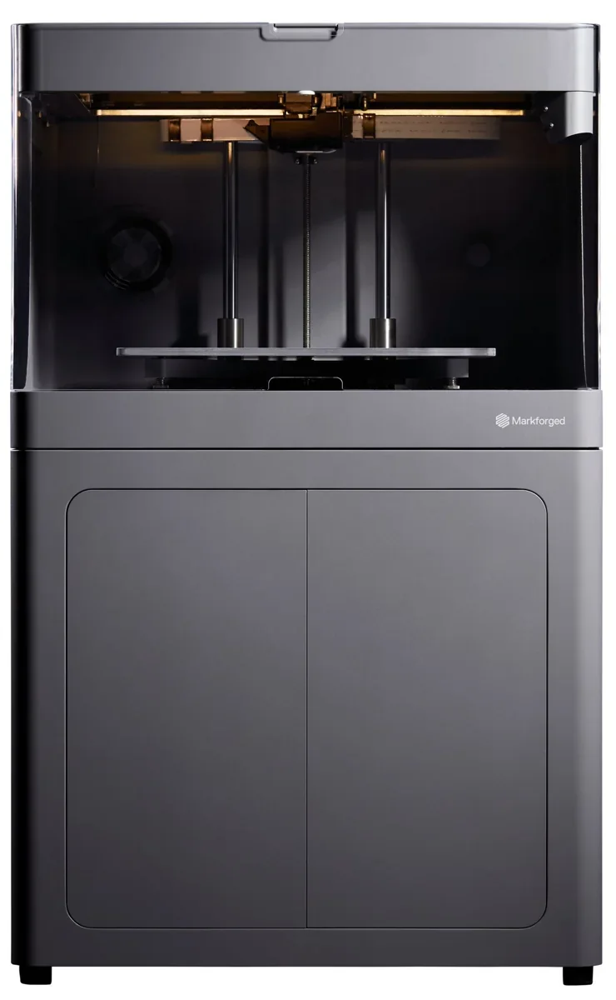
Industrial continuous-fibre composite printer with laser-based in-process part inspection, the top of Markforged's X series.
330 x 270 x 200 mm (Aniwaa records 17.82 L)
Fully enclosed CoreXY 250 mm cube with a 320 C nozzle and a 120 C bed, claimed at 46 dB in standard mode.
250 x 250 x 250 mm
350 mm cube enclosed CoreXY with 65 C active chamber heating, a 350 C hardened-steel nozzle and a 120 C bed.
350 x 350 x 350 mm
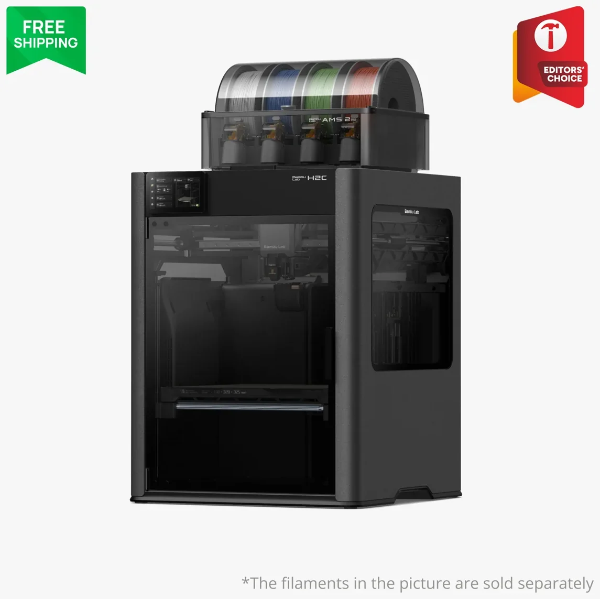
Top of the H2 family: dual-nozzle, 350 C hot end, 120 C bed, heated chamber and four cameras as standard, at more than twice…
Single-nozzle printing 305 x 320 x 325 mm; dual-nozzle printing 300 x 320 x 325 mm; total volume for two nozzles 330 x 320 x…
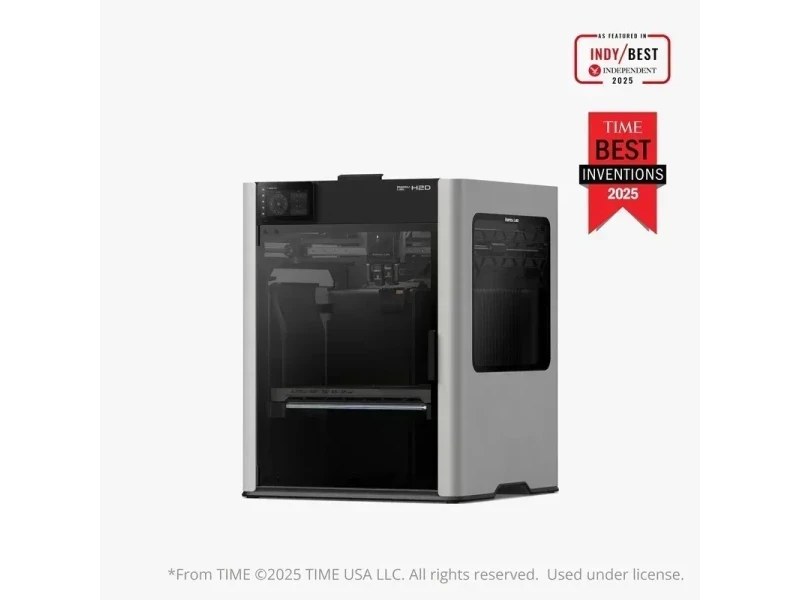
Large dual-nozzle enclosed CoreXY machine with a 350 C hot end, 65 C heated chamber, four cameras and an optional 10 W or 40 W…
Single-nozzle printing 325 x 320 x 325 mm; dual-nozzle printing 300 x 320 x 320 mm; total volume across the two nozzles 350 x…

Single-nozzle member of the H2 family: 340x320x340 mm, 350 C hot end, 120 C bed and a 65 C heated chamber in the same body as…
340 x 320 x 340 mm (manufacturer figure)
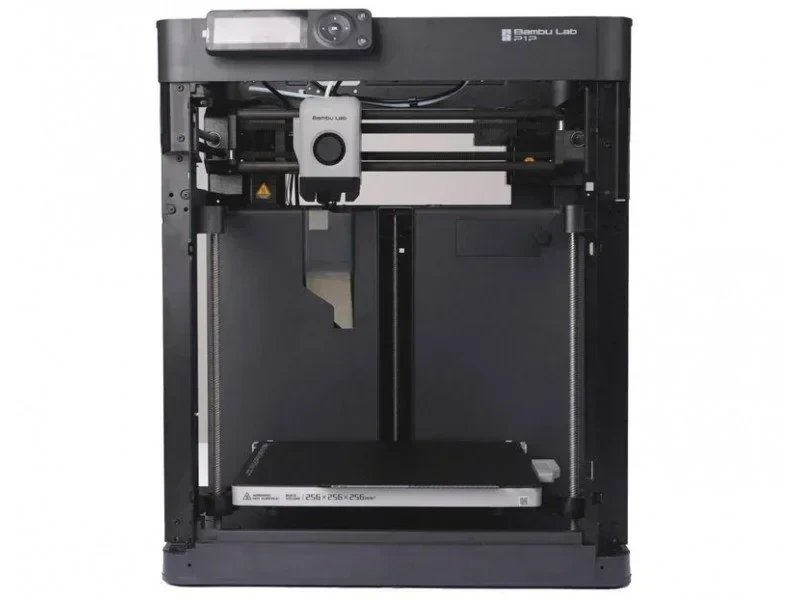
Open-frame CoreXY 256 mm cube printer, the un-enclosed sibling of the P1S, discontinued from Bambu Lab's own store by August…
256 x 256 x 256 mm advertised. Bambu's own footnote limits the default printable height in Bambu Studio to 250 mm to avoid…
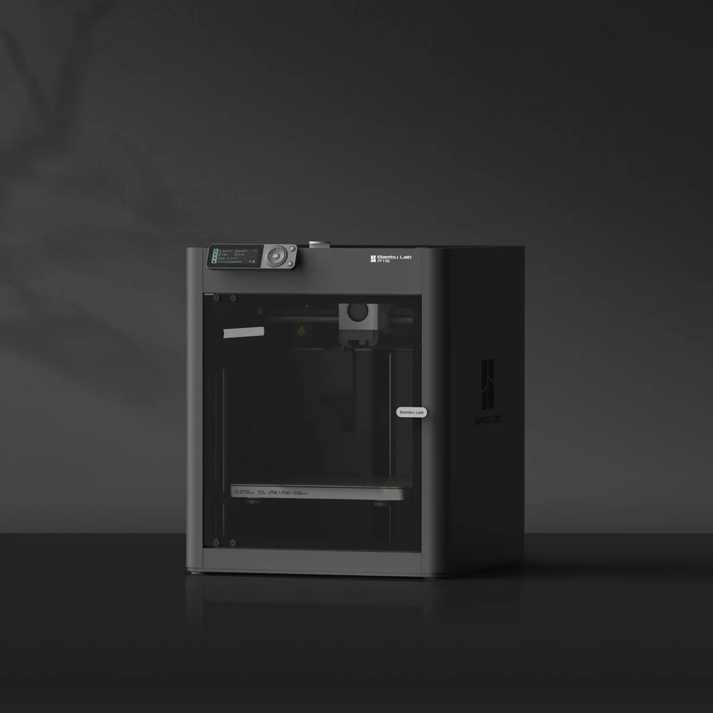
Enclosed CoreXY 256 mm cube printer with activated-carbon filtration and a monochrome button UI, sold with or without the…
256 x 256 x 256 mm advertised. Bambu's own footnote sets the default printable height in Bambu Studio to 250 mm to prevent…
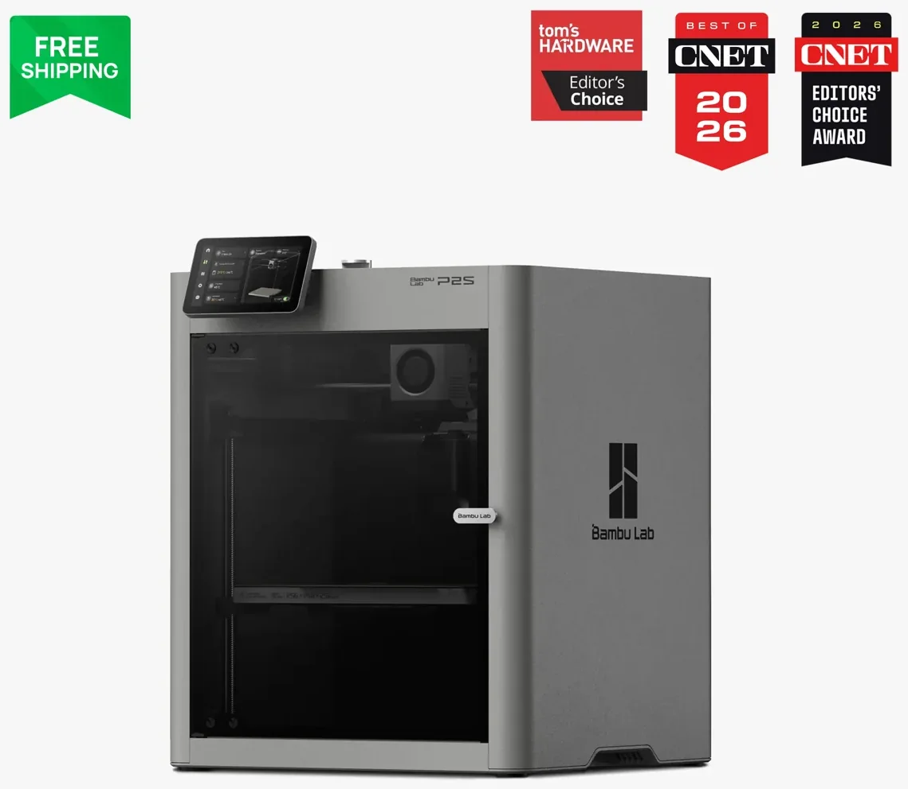
2026 enclosed CoreXY successor to the P1S: 600 mm/s, 110 C bed, hardened-steel nozzle, 5-inch touchscreen and a built-in…
256 x 256 x 256 mm (manufacturer figure)
Enclosed CoreXY 256 mm cube prosumer machine with carbon-fibre X rails, micro-lidar first-layer inspection and a 110 C bed.
256 x 256 x 256 mm advertised (manufacturer figure)
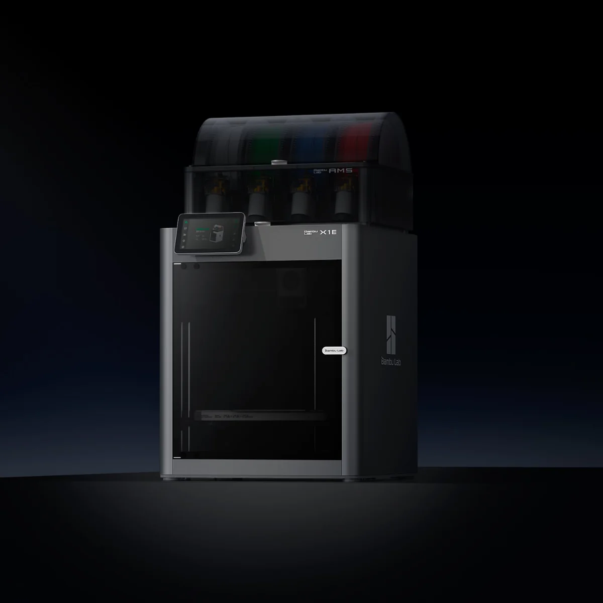
Business-oriented X1 variant with a 60 C actively heated chamber, 320 C hot end, HEPA and carbon filtration, Ethernet with…
256 x 256 x 256 mm (manufacturer figure)
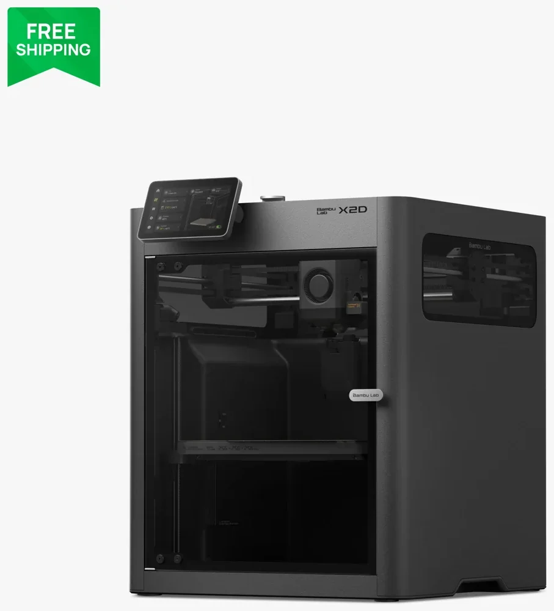
Dual-nozzle enclosed CoreXY machine with a 65 C heated chamber and a 120 C bed, positioned as the accessible dual-nozzle model…
Main nozzle 256 x 256 x 260 mm; auxiliary nozzle 235.5 x 256 x 256 mm; dual-nozzle printing 235.5 x 256 x 256 mm; total…
400 mm cube CoreXY bed-dropper with an all-metal frame, X-axis linear rail and 64-point auto levelling.
400 x 400 x 400 mm
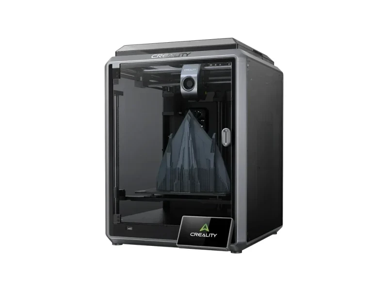
Enclosed CoreXY speed machine, 220 mm cube, with a PTFE-lined hotend and a copper nozzle - the base model of the K1 family.
220 x 220 x 250 mm
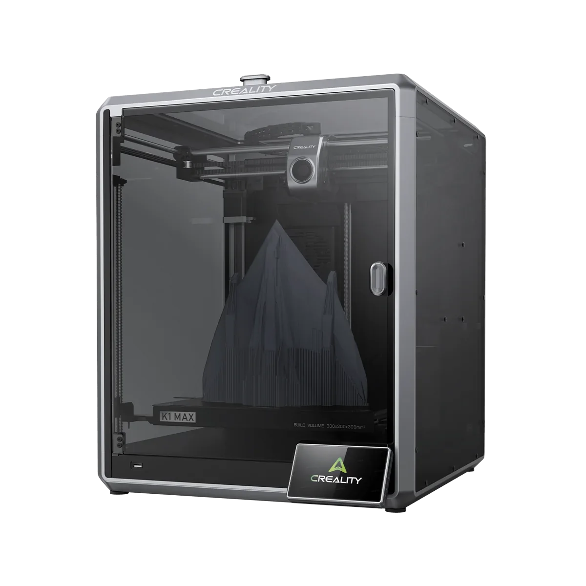
300 mm cube version of the K1 with a 1000 W supply, Ethernet and an included 1080p AI camera.
300 x 300 x 300 mm
Cut-down K1 with a glass-filled-nylon hotend body, epoxy build plate and no chamber heating or air filter.
220 x 220 x 250 mm
All-metal-hotend version of the K1 aimed at carbon-fibre filaments, with an included AI camera and activated-carbon air filter.
220 x 220 x 250 mm
Entry model of the K2 family: 260 mm cube, no heated chamber, 4-inch screen and a 720p chamber camera.
260 x 260 x 260 mm
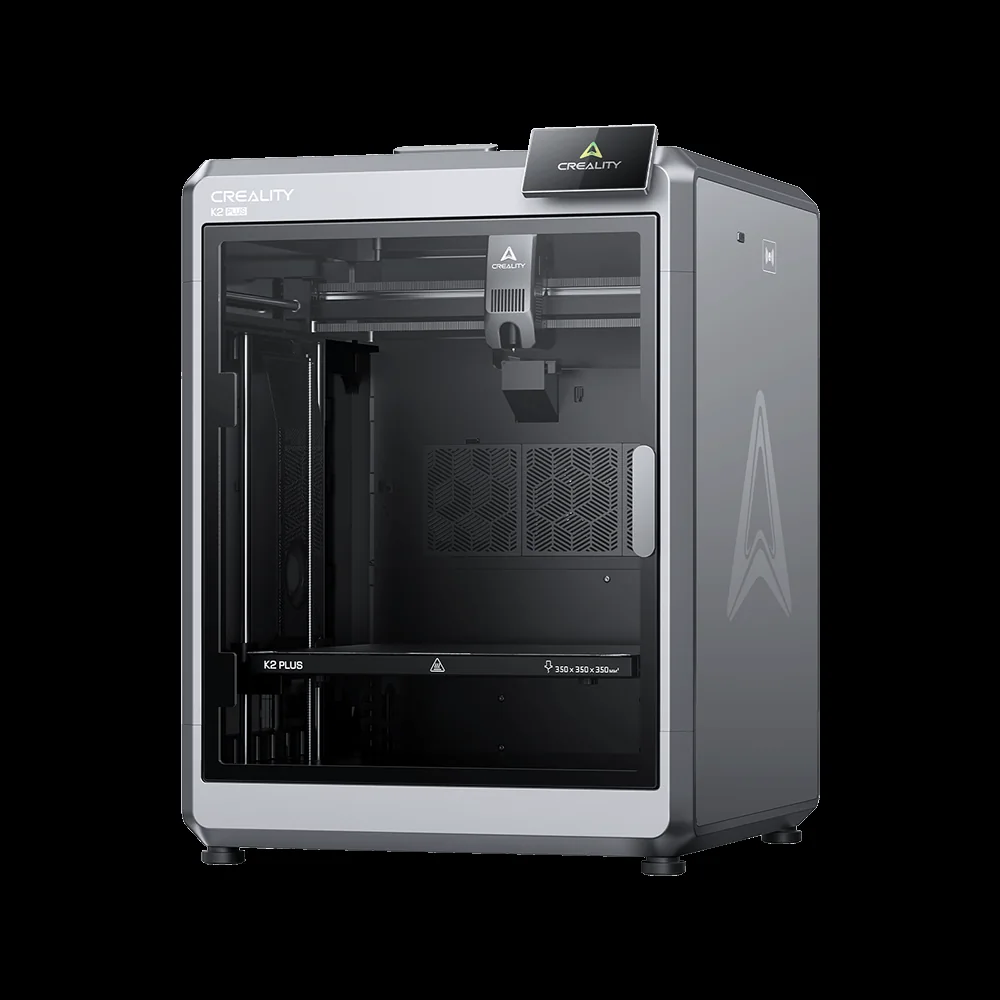
Top K2: 350 mm cube, 350 C nozzle, 120 C bed, 30000 mm/s2 claim, automatic belt tensioning and dual air filters.
350 x 350 x 350 mm
Middle K2: 300 mm cube with a 60 C heated chamber, RFID filament reader, Ethernet and a nozzle AI camera for flow calibration.
300 x 300 x 300 mm
2026 CoreXY 256 mm cube with a 350 C nozzle and dual 4260 steppers, sold without camera, lighting or air filter as standard.
256 x 256 x 256 mm; printing platform 260 x 260 mm
Centauri 2 bundled with the CANVAS four-colour unit, adding RFID filament detection, auto refill and tangle detection.
256 x 256 x 256 mm; printing platform 260 x 260 mm
Enclosed die-cast CoreXY 256 mm cube with a 320 C hardened nozzle, chamber camera and air filter, aimed at carbon-fibre…
256 x 256 x 256 mm; printing platform 260 x 260 mm
Centauri Carbon 2 bundled with the CANVAS multi-material unit: 350 C nozzle, enclosed CoreXY, HEPA and carbon filtration.
256 x 256 x 256 mm; printing platform 260 x 260 mm
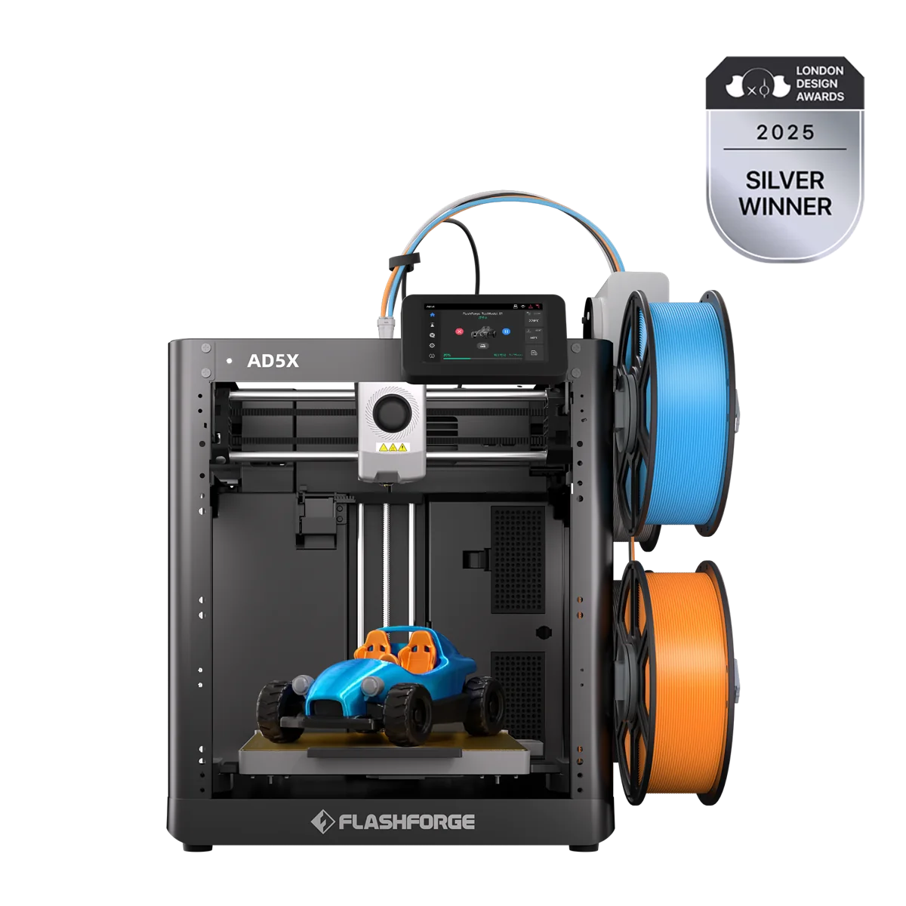
Open-frame Adventurer-chassis CoreXY with a four-colour Intelligent Filament System and a 300 °C nozzle.
220 x 220 x 220 mm advertised
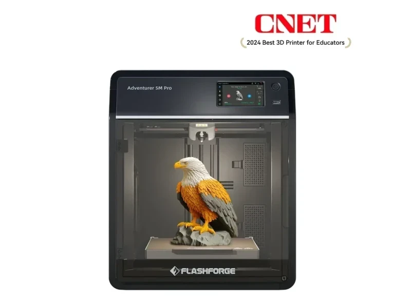
Enclosed, filtered version of the Adventurer 5M CoreXY with a 110 °C bed and dual-stage air filtration.
220 x 220 x 220 mm advertised
Explore the hardware, firmware and complete sourced specifications for this model.
220 x 215 x 245 mm advertised. Vendor profile: printable_area = 0x0,220x0,220x215,0x215, printable_height = 245
Explore the hardware, firmware and complete sourced specifications for this model.
Advertised 256 × 256 × 256 mm; platform 260 × 260 mm. Firmware agrees exactly: x_range=0,256, y_range=0,256, z_range=0,256.…
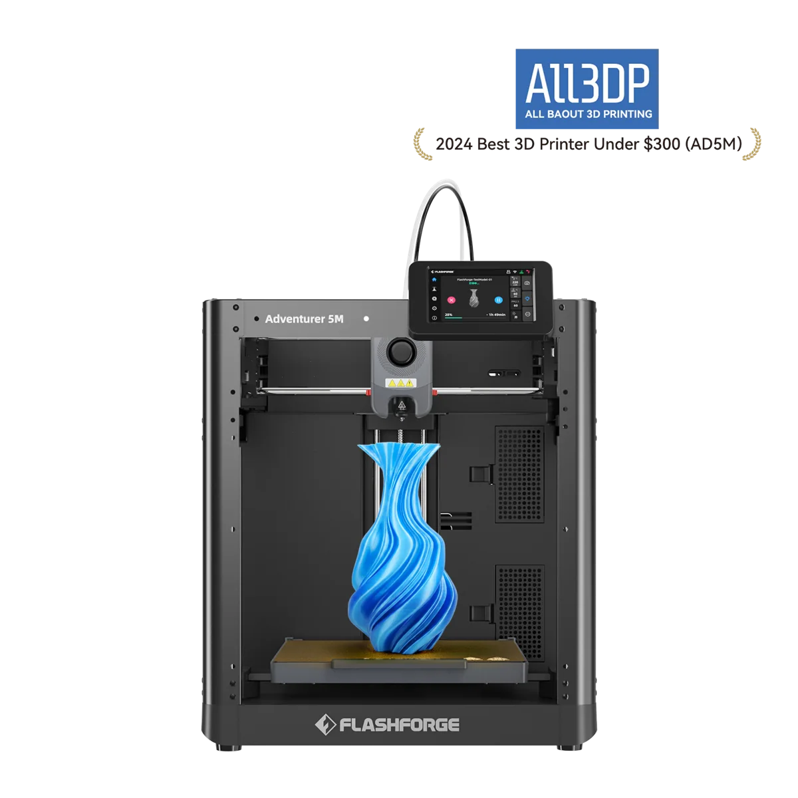
Explore the hardware, firmware and complete sourced specifications for this model.
Advertised 220 × 220 × 220 mm; measured usable 217 × 217 mm X/Y; firmware travel envelope X/Y −125 → +125 and Z −10 → 230
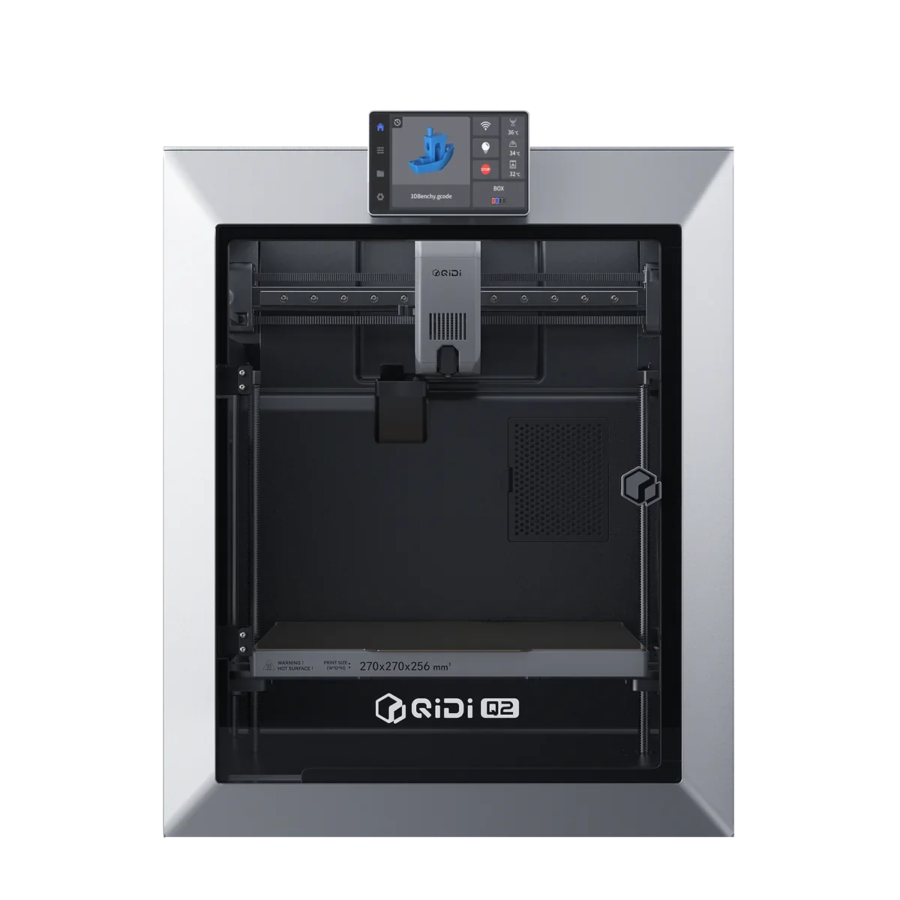
Explore the hardware, firmware and complete sourced specifications for this model.
Advertised 270 × 270 × 256 mm. Firmware travel: X position_min:-1 / position_endstop:271 / position_max:275; Y…
Folding, portable inverted CoreXY that prints upside-down onto a glass bed and packs into a hard case.
180 x 180 x 165 mm
Large-format open CoreXY kit in 300/400/500 mm sizes, optionally hybrid-CoreXY or IDEX.
300 x 300 x 300, 400 x 400 x 400 or 500 x 500 x 500 mm. Sortable value is the 300 mm kit
Revision of the V-Core 4 with a steel X gantry, all-metal toolhead and thicker beds on the larger sizes.
300 x 300 x 300, 400 x 400 x 400 or 500 x 500 x 500 mm. Sortable value is the 300 mm kit
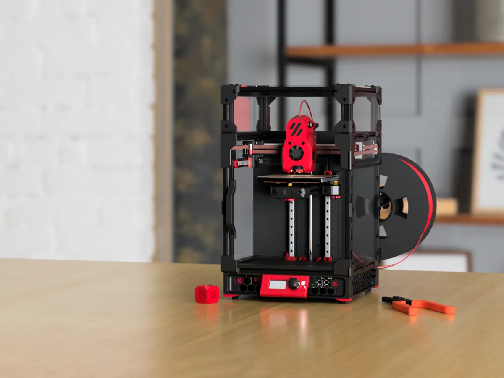
Open-source 120 mm CoreXY sold only as a kit; the smallest machine in the Voron line. Supplied as a kit — kits by LDO, Formbot…
120 x 120 x 120 mm
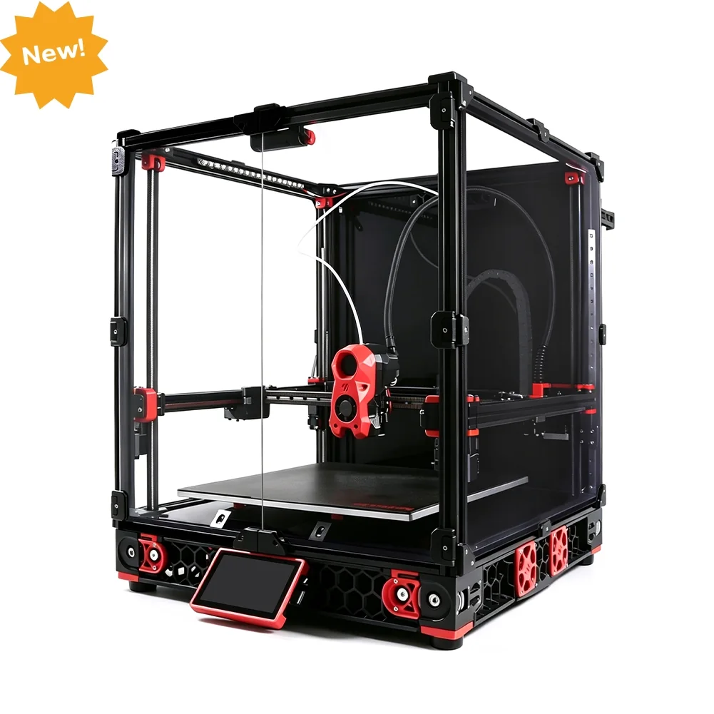
Open-source CoreXY with a belted flying gantry on four Z motors, the reference DIY machine of its class. Supplied as a kit —…
300 x 300 x 300 mm or 350 x 350 x 350 mm. Sortable value is the 350 mm kit
Open-source CoreXY with a fixed gantry and three independently driven Z motors under the bed. Supplied as a kit — kit by LDO.
250 x 250 x 250 mm or 300 x 300 x 300 mm depending on variant. Sortable value is the 300 mm kit
Open-source high-speed CoreXY with four XY motors (all-wheel drive) on a CNC-machined metal frame. Supplied as a kit — kit by…
330 x 330 x 400 mm
Large-format 360 mm cube CoreXY Prusa with a segmented 16-tile heatbed, in the single-toolhead configuration.
360 x 360 x 360 mm, which Prusa states as 46.7 litres
Large 300x300x330 mm enclosed CoreXY Prusa with active convection chamber heating to 60 C and a 400 C optional HT hotend.
300 x 300 x 330 mm, which Prusa states as 29.7 litres
Fully enclosed CoreXY Prusa with an all-steel exoskeleton, active chamber heating to 55 C and the Nextruder/load-cell stack…
250 x 220 x 270 mm (manufacturer figure)
Large-format enclosed CoreXY with FOC closed-loop steppers, 370 °C hotend and third-generation 65 °C chamber heating.
390 x 390 x 340 mm advertised
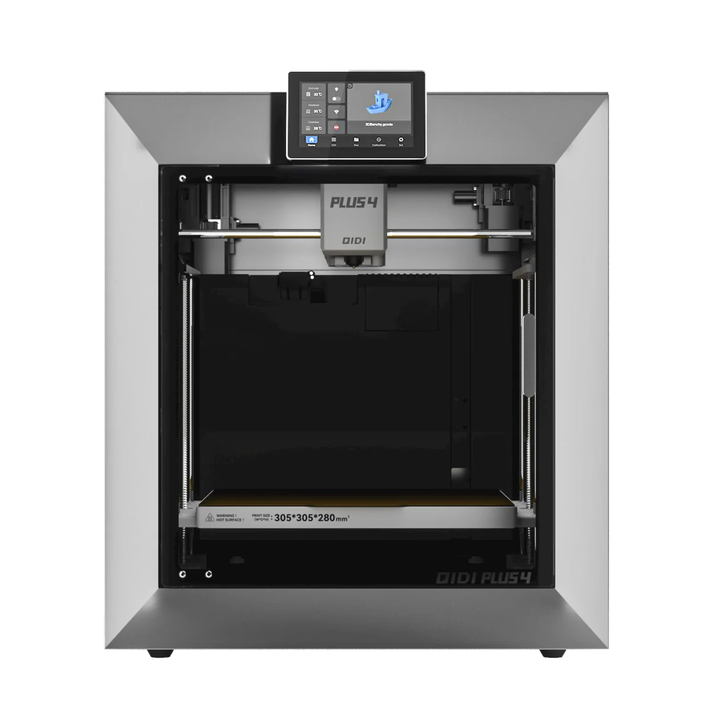
Enclosed 305 mm CoreXY with 65 °C active chamber heating and a 370 °C bimetal hotend aimed at engineering filaments.
305 x 305 x 280 mm advertised. No independently measured usable envelope found
August 2026 replacement for the Plus4: 320 mm cube-ish envelope, 65 °C chamber, 370 °C hotend and a three-stage air filter.
320 x 320 x 300 mm advertised — QIDI states this is about 18% more volume than the Plus4
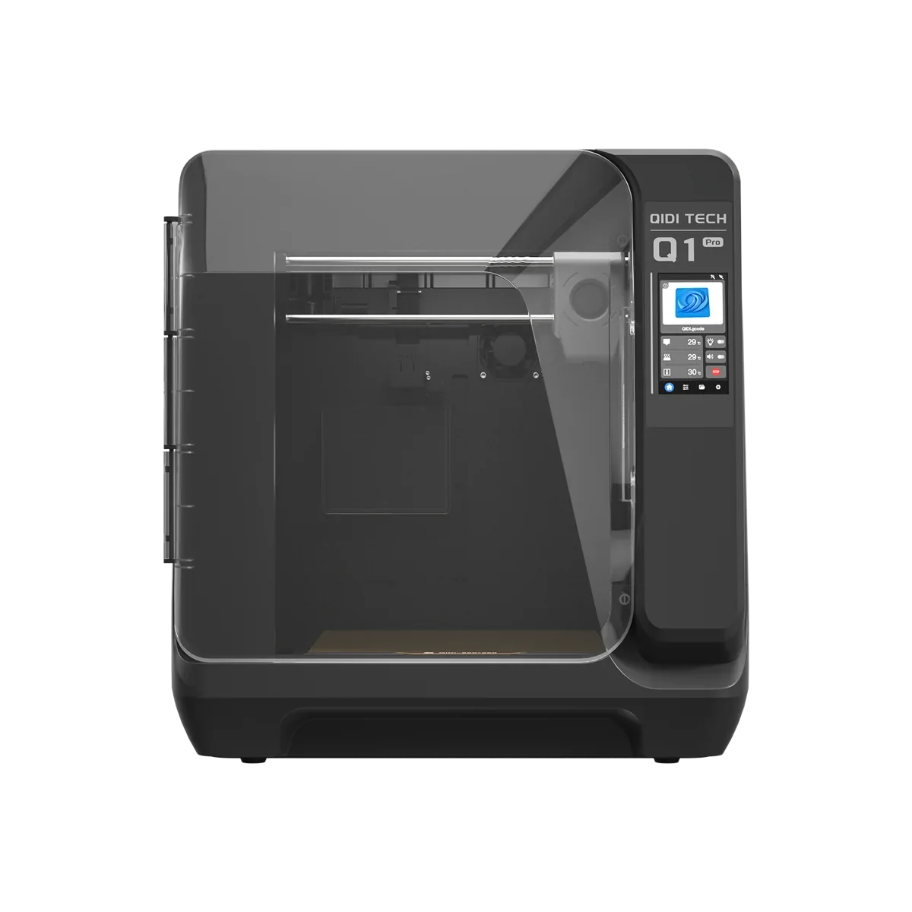
Enclosed 245 mm CoreXY with an actively heated 60 °C chamber, discontinued in favour of the QIDI Q2.
245 x 245 x 240 mm advertised (QIDI). No independently measured usable envelope found
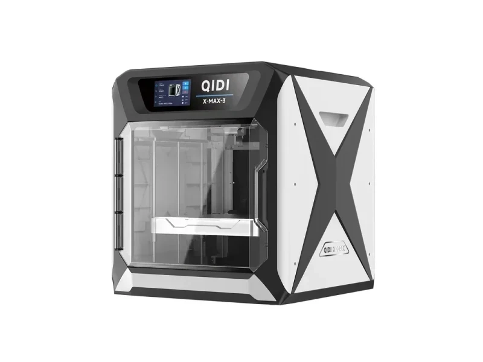
Discontinued 325 mm enclosed CoreXY with 65 °C chamber heating, replaced in QIDI's line by the Max4.
325 x 325 x 315 mm advertised
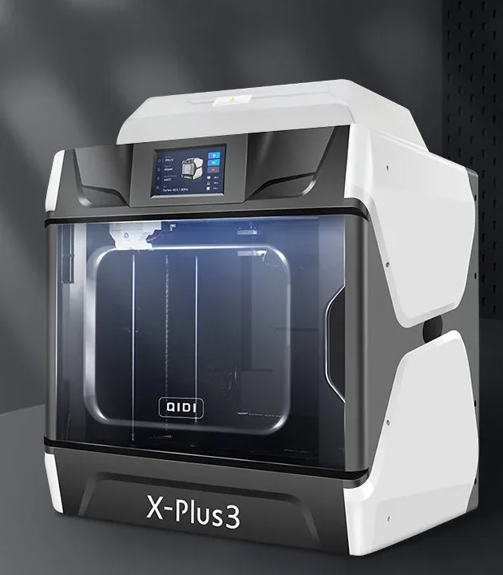
280 mm enclosed CoreXY with 65 °C independent chamber heating, the mid-size member of QIDI's 3-series.
280 x 280 x 270 mm advertised
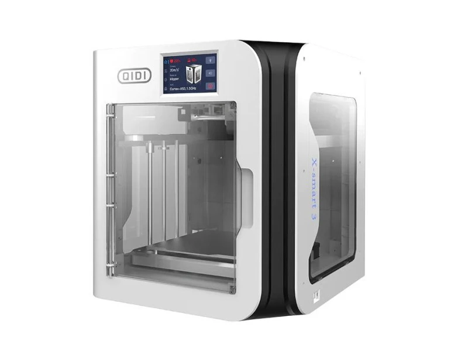
Compact open-frame CoreXY, the entry model of QIDI's 3-series, with no chamber heating and a 300 °C hotend.
175 x 180 x 170 mm advertised
350 mm open-source CoreXY kit derived from the Voron 2.4, sold flat-packed with Klipper on an Allwinner H616.
350 x 350 x 345 mm advertised
500 mm cube open-source CoreXY with CAN-bus toolhead, TMC5160 XY drivers and a 50 mm3/s ceramic hotend.
500 x 500 x 500 mm advertised
Compact enclosed CoreXY on full linear rails with an AC-heated bed, eddy-current levelling and a 1200 mm/s headline speed.
152.4 x 152.4 x 152.5 mm advertised
Entry Kobra 2 bed-slinger: 220x220x250 mm, 300 mm/s claim, LeviQ 2.0 levelling and a 60 W hotend.
250 x 220 x 220 mm stated HWD, i.e. 220 x 220 x 250 mm in X x Y x Z; Anycubic quotes 12.1 L
420x420x500 mm Kobra 2, an 88 litre bed-slinger with a 90 C bed and 49-point levelling.
500 x 420 x 420 mm stated HWD, i.e. 420 x 420 x 500 mm; Anycubic quotes 88.2 L
Cheapest Kobra 2 with a knob-driven 2.4-inch screen and a 250 mm/s ceiling, running Marlin with input shaping.
250 x 220 x 220 mm stated HWD, i.e. 220 x 220 x 250 mm; 12.1 L
320x320x400 mm Kobra 2 with dual-motor dual-Z, 49-point levelling and a 90 C bed ceiling.
400 x 320 x 320 mm stated HWD, i.e. 320 x 320 x 400 mm; Anycubic quotes 40.9 L
Fastest of the small Kobra 2 machines at a claimed 500 mm/s, with a Cortex-A7 processor and vibration compensation.
250 x 220 x 220 mm stated HWD, i.e. 220 x 220 x 250 mm; 12.1 L
250x250x260 mm bed-slinger sold with the ACE Pro multi-material unit for 4- or 8-colour printing at a claimed 600 mm/s.
250 x 250 x 260 mm; Anycubic quotes a 16.25 L maximum printing volume
88 litre bed-slinger with dual Y motors, semi-automatic belt tensioning and a bed Anycubic claims heats in 125 seconds.
420 x 420 x 500 mm, which Anycubic states as 88 L
2026 260 mm cube bed-slinger with a hardened-steel nozzle, 49-point LeviQ 3.0 levelling and a 3.5-inch screen.
260 x 260 x 260 mm
260 mm cube bed-slinger with native four-colour printing built in, expandable to 19 colours.
260 x 260 x 260 mm
2021 Bowden bed-slinger with 16-point auto levelling, TMC2209 drivers and a 245 mm bed, still listed in 2026.
260 x 245 x 245 mm stated as HWD, i.e. 245 x 245 x 260 mm in the usual X x Y x Z order; Anycubic quotes a 15.6 L build volume

256 mm cube bed-slinger with full-metal linear rails on all three axes, nozzle-touch eddy-current bed probing and optional…
256 x 256 x 256 mm (manufacturer figure)

180 mm cube bed-slinger, the smallest and cheapest Bambu Lab machine, with nozzle-touch probing and optional four-colour AMS…
180 x 180 x 180 mm (manufacturer figure)
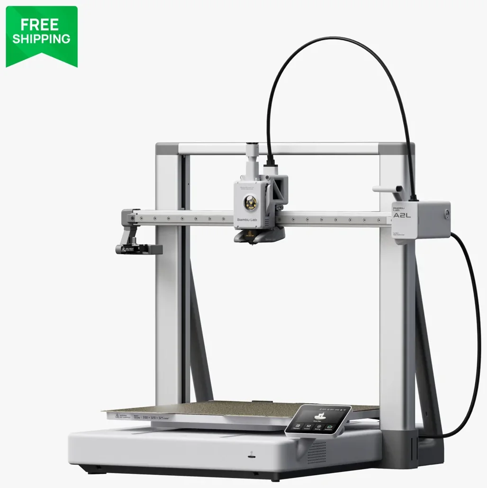
Large-format 330x320x325 mm bed-slinger released in 2026, with a servo extruder, an 80 C bed and an optional…
330 x 320 x 325 mm (manufacturer figure)
CoreXZ bed-slinger rated 600 mm/s with a quick-swap hardened-steel unicorn nozzle and a 110 C bed.
220 x 220 x 250 mm
Klipper-based bed-slinger with an X-axis linear rail, 60 W ceramic hotend and a 4.3-inch touchscreen, rated 500 mm/s.
220 x 220 x 240 mm - 10 mm shorter than the SE and V3, a difference that is easy to miss
300x300x330 mm CoreXZ bed-slinger with automatic XZ belt tensioning and dual Y motors.
300 x 300 x 330 mm
Budget i3 bed-slinger with a Sprite direct extruder, CR Touch probe and strain-gauge auto Z-offset, capped at 250 mm/s and 2500…
220 x 220 x 250 mm
2026 Ender-3 with CFS multi-material support, 500 mm/s and a 2.8-inch touchscreen, sold as a combo with the filament system.
220 x 220 x 235 mm
Die-cast aluminium bed-slinger with a folding 3.2-inch touchscreen, built-in RFID reader and support for up to four CFS units.
260 x 260 x 300 mm
Marlin-based 225x225x280 mm bed-slinger from 2022, still listed in 2026, with a 180 mm/s ceiling and a 260 C nozzle.
225 x 225 x 280 mm; printing platform 235 x 235 mm
Klipper-based i3 bed-slinger with a 225 mm bed, 110 C heatbed and a 500 mm/s claim - the base model of the Neptune 4 family.
225 x 225 x 265 mm; the PEI platform itself is 235 x 235 mm
420x420x480 mm bed-slinger, the largest Neptune, with an 85 C bed ceiling and acceleration capped at 8000 mm/s2.
420 x 420 x 480 mm; printing platform 430 x 430 mm
320x320x385 mm Klipper bed-slinger with a titanium heatbreak, dual-fan direct extruder and a 121-point mesh, rated 500 mm/s.
320 x 320 x 385 mm; printing platform 330 x 330 mm
Explore the hardware, firmware and complete sourced specifications for this model.
Advertised 225 x 225 x 265 mm. Firmware limits: X position_min -8.5 / position_endstop -8 / position_max 235.1; Y…
Explore the hardware, firmware and complete sourced specifications for this model.
Advertised 220 × 220 × 250 mm. Firmware travel: X position_max: 220, Y position_min: -5 → position_max: 232, Z position_max…
Bedslinger with an AI camera and 7x7 levelling, from Anker's since-rebranded 3D-printing line. Brand note: now eufyMake.
235 x 235 x 250 mm
Screenless, cameraless budget version of the M5 with a higher flow rate and app-only control. Brand note: now eufyMake.
220 x 220 x 250 mm

US-built open-hardware dual-extruder workhorse on Marlin with OSHWA certification and 2.85 mm filament.
285 x 285 x 285 mm
582 mm-long-bed TAZ Pro fitted with a 1.2 mm GammaMaster steel nozzle for large coarse-layer parts.
282 x 582 x 285 mm
The long-running 8-bit Prusa i3 bed-slinger with EINSY RAMBo electronics and a SuperPINDA inductive probe, now sold only as a…
25 x 21 x 21 cm = 250 x 210 x 210 mm (manufacturer figure)
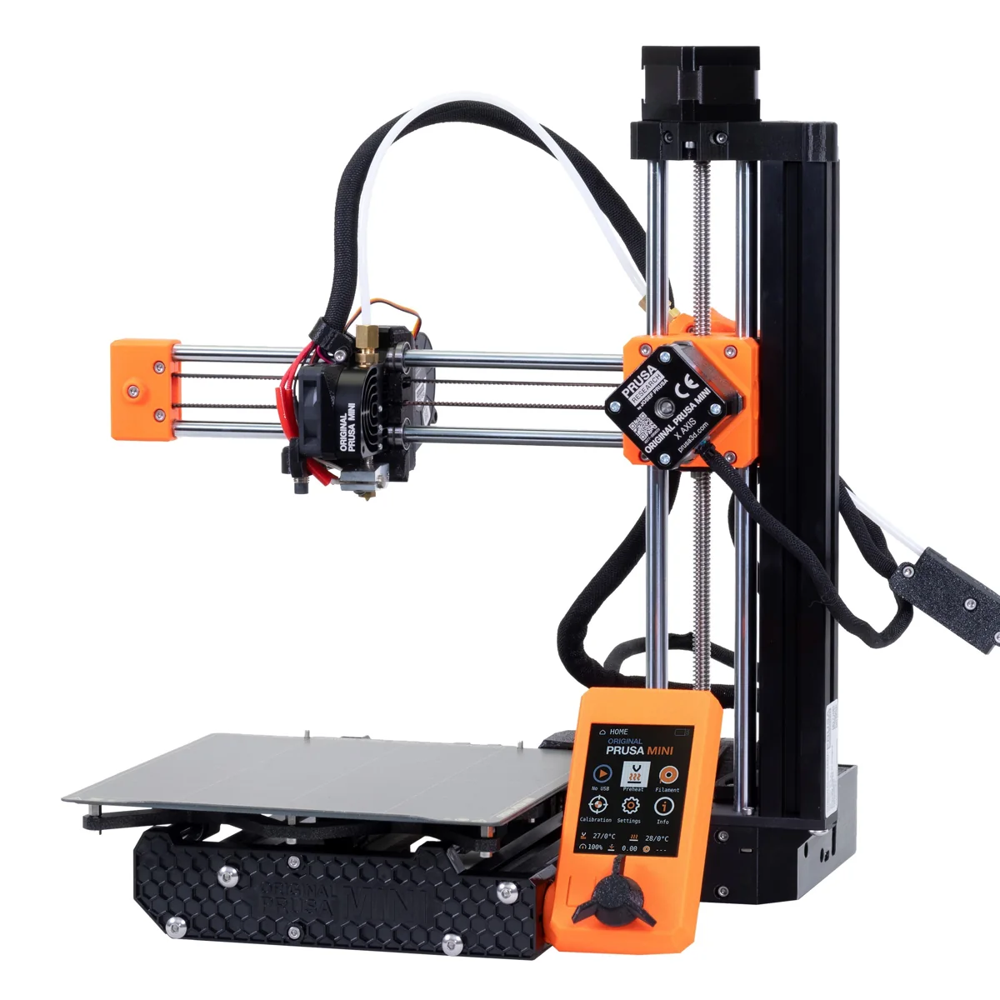
Compact 180 mm cube Prusa with a Bowden extruder, SuperPINDA probe and 32-bit Buddy electronics, semi-assembled from three…
180 x 180 x 180 mm (manufacturer figure)
The 2023 Nextruder-and-xBuddy bed-slinger that introduced load-cell first-layer calibration to the Prusa i3 line; superseded by…
250 x 210 x 220 mm (manufacturer figure)
Cartesian bed-slinger with a load-cell nozzle probe, quick-swap high-flow nozzle and 360-degree part cooling, sold assembled or…
250 x 210 x 220 mm (manufacturer figure)
Open-source i3-style bedslinger kit with an all-metal planetary direct-drive extruder, now replaced in Sovol's line by the SV06…
220 x 220 x 250 mm advertised
Larger 300 mm version of the SV06 bedslinger kit, superseded by the SV06 Plus ACE.
300 x 300 x 340 mm advertised (note: the ACE version is 350 mm in Z)
Klipper-based 300 mm bedslinger with a ceramic-heater hotend, capacitive touchscreen and built-in camera.
300 x 300 x 350 mm advertised
Klipper bedslinger kit with a planetary direct-drive extruder and a 5-inch touchscreen; discontinued.
220 x 220 x 250 mm advertised
300 mm large-format version of the SV07 Klipper bedslinger with a 600 W supply; discontinued.
300 x 300 x 350 mm advertised
Large enclosed IDEX machine with interchangeable extruder modules, a 65 °C chamber and a 130 °C bed.
400 x 350 x 500 mm
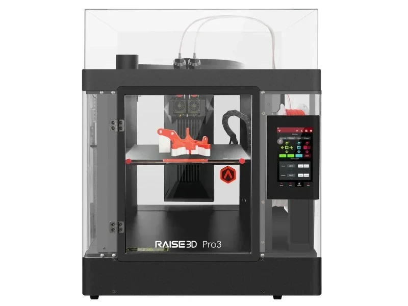
Enclosed dual-head professional machine with an electronic lifting print head and HEPA/charcoal filtration.
300 x 300 x 300 mm with one extruder; 255 x 300 x 300 mm with both
A large 3-in-1 system for dual-extrusion printing, laser cutting and CNC work.
350 x 400 x 400 mm in dual-nozzle mode (400 x 400 x 400 with the right nozzle alone)
Compact IDEX machine on linear rails with a PEI glass plate, copy and mirror printing modes.
300 x 200 x 200 mm in default and backup modes
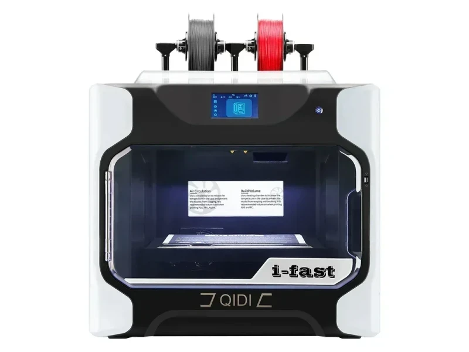
Discontinued enclosed dual-extruder machine with a 60 °C heated chamber and two swappable extruder assemblies.
330 x 250 x 320 mm advertised
Open-frame CoreXY tool-changer with four independent swappable toolheads and near-zero purge waste.
256 x 256 x 256 mm
Enclosed, chamber-heated version of the Creator 5 four-toolhead changer with HEPA and carbon filtration.
256 x 256 x 256 mm
Four-toolhead changer with RFID filament recognition, a chamber camera and Klipper firmware.
270 x 270 x 270 mm
Large-format 360 mm cube CoreXY Prusa with a segmented 16-tile heatbed, in the two-toolhead configuration.
360 x 360 x 360 mm, which Prusa states as 46.7 litres
Large-format 360 mm cube CoreXY Prusa with a segmented 16-tile heatbed, in the five-toolhead configuration.
360 x 360 x 360 mm, which Prusa states as 46.7 litres
CORE One+ (Gen 2) fitted with Prusa's INDX multi-tool system for four or eight filaments, sold assembled or as a kit.
250 x 220 x 270 mm - the CORE One+ (Gen 2) figure from the shared product page; Prusa does not publish a separate INDX build…
12K MSLA printer with an LED-matrix light source, dual linear Z rails and levelling-free setup.
218 x 123 x 200 mm (Anycubic quotes 5.4 L; the table writes it as 200 x 218 x 123 mm in H x W x D order)
10.1-inch 14K MSLA printer with a COB-plus-Fresnel light engine, ACF film and a levelling-free build plate.
223 x 126 x 230 mm (Anycubic quotes 6.5 L)
14K MSLA printer with LighTurbo 3.0 optics, a heated peristaltic-pump resin vat and automatic resin refill.
223 x 126 x 230 mm
Entry 4K monochrome MSLA printer with a COB light source, PFA release film and a resistive touchscreen.
143.43 x 89.6 x 150 mm
9K MSLA printer with a 25-LED COB engine, tilt-release, an AI camera and 92% claimed light uniformity.
153.36 x 77.76 x 165 mm
10-inch 16K MSLA printer with tilt-release, a Fresnel-collimated COB engine, a heated tank and an AI camera.
211.68 x 118.37 x 220 mm
Professional MSLA printer with a 60-LED Low Force Display light engine, 50 micron pixels and cartridge resin handling.
200 x 125 x 210 mm (Formlabs quotes 5.25 litres)
Large-format Form 4 with a 24.2 litre build volume, 46 micron pixels and twin resin cartridges.
353 x 196 x 350 mm (Formlabs quotes 24.2 litres)
10.1-inch 14K MSLA printer with a built-in heater, plug-in air purifier and a ball-screw dual-rail Z axis.
223 x 126 x 235 mm
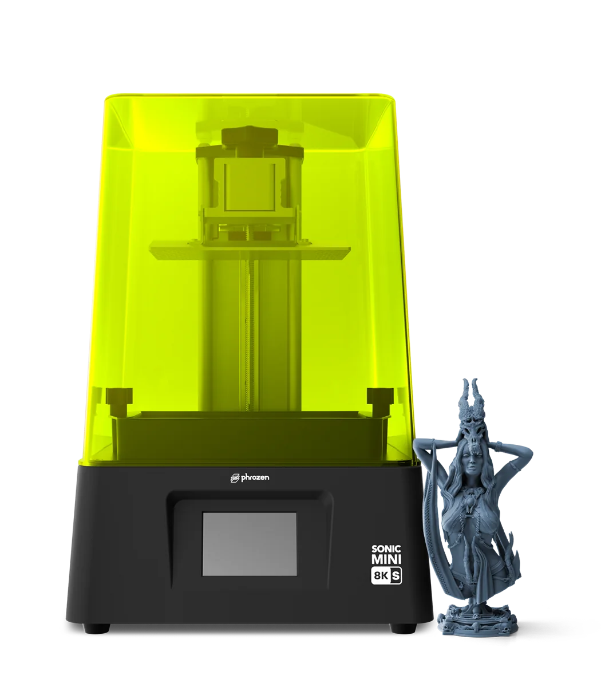
Compact 7.1-inch 8K MSLA printer with 22 micron pixels and a linear-projection LED module.
165 x 72 x 170 mm
10.3-inch 8K MSLA printer with built-in resin heating and an odour filter, aimed at large studio prints.
228 x 128 x 245 mm
Large-format 12K MSLA printer. Specifications below are manufacturer claims; no independent measurements added.
285.5 × 214 × 300 mm (X × Y × Z), advertised 18.3 L; usable volume not independently measured.
Large-format 7K MSLA printer with a heated vat. Speed depends on resin and layer height; manufacturer figures are not…
298 × 164 × 300 mm (X × Y × Z), advertised 14.7 L; usable volume not independently measured.
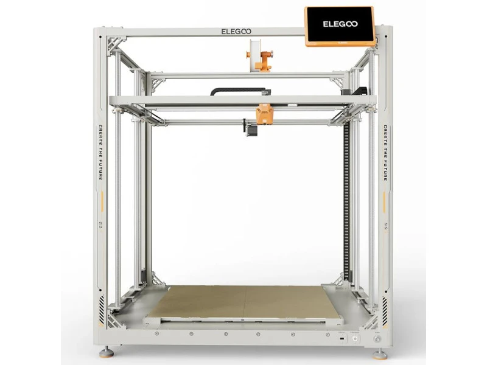
800x800x1000 mm fixed-bed gantry printer on four independent PEI plates, expandable to four printheads on the X axis.
800 x 800 x 1000 mm; the platform is 820 x 820 mm made up of four independent 410 x 410 mm PEI plates
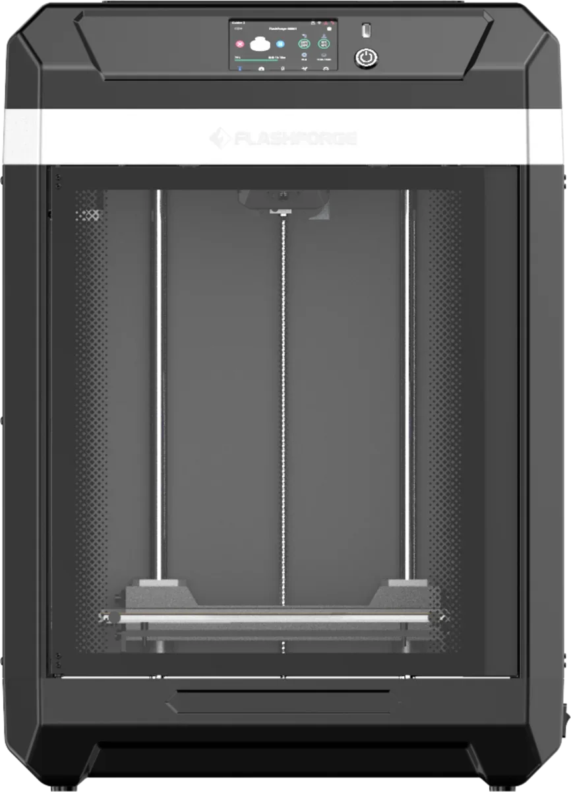
Enclosed professional single-extruder machine with a heated chamber; discontinued at retail.
300 x 250 x 340 mm advertised
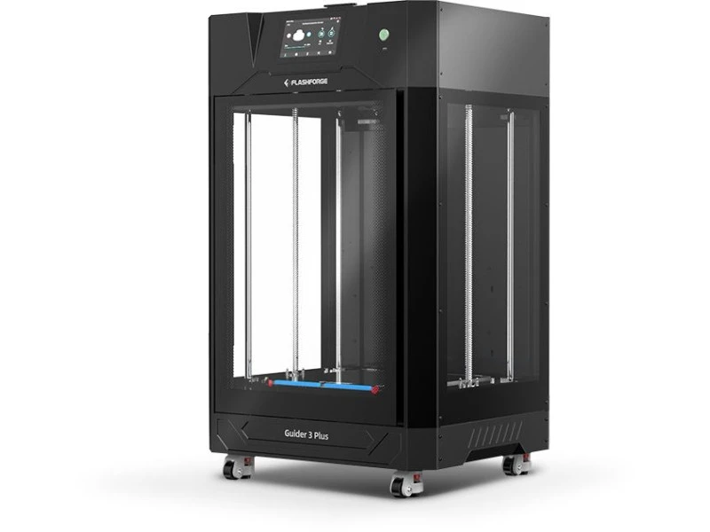
Large 350 x 350 x 600 mm enclosed professional machine with ball-screw Z and twin sealed filament chambers.
350 x 350 x 600 mm advertised
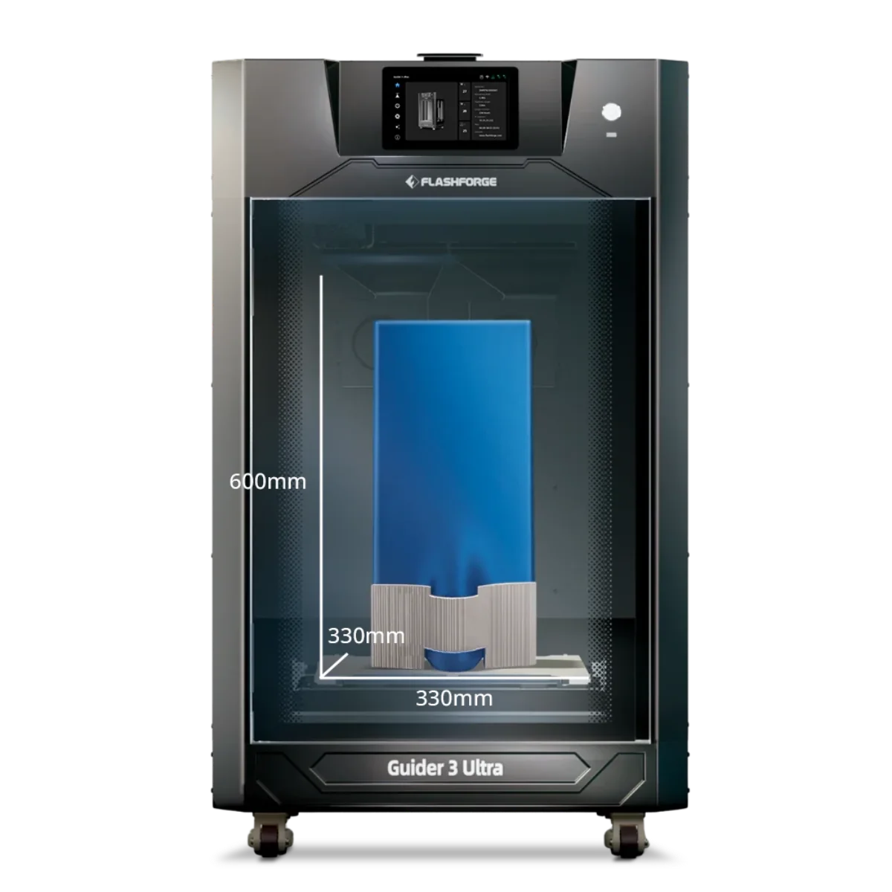
Dual-extruder 600 mm-tall enclosed professional CoreXY with a 350 °C hotend and CE/FCC/RoHS certification.
330 x 330 x 600 mm with a single extruder; 300 x 330 x 600 mm when both extruders are in use
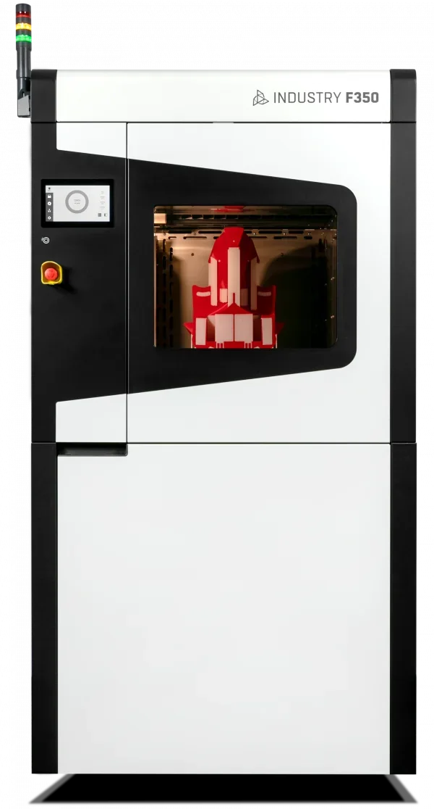
Polish-built dual-extruder high-temperature machine with a 500 °C nozzle and a 140 °C heated chamber.
40.46 L (340 x 340 x 350 mm)
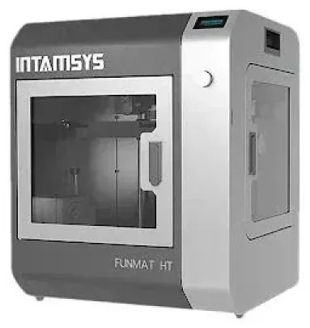
Desktop-scale 260 mm PEEK-capable machine with a 90 °C chamber and a swappable high-temperature extruder.
260 x 260 x 260 mm
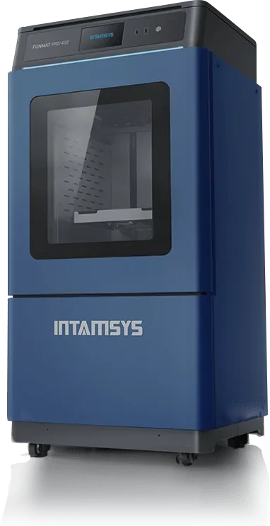
Dual-nozzle PEEK machine with a 90 °C chamber, 500 °C extruders, water cooling and an auto-cleaning nozzle station.
305 x 305 x 406 mm (12 x 12 x 16 in)
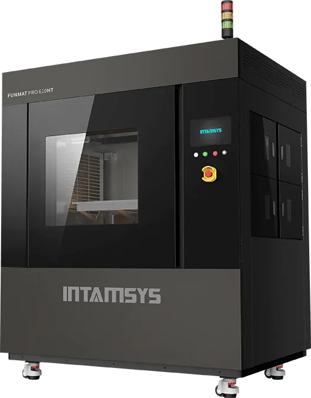
Full-size PEEK/ULTEM machine with a 300 °C heated chamber, 300 °C bed, servo/ball-screw motion and a safety PLC.
610 x 508 x 508 mm (24 x 20 x 20 in)
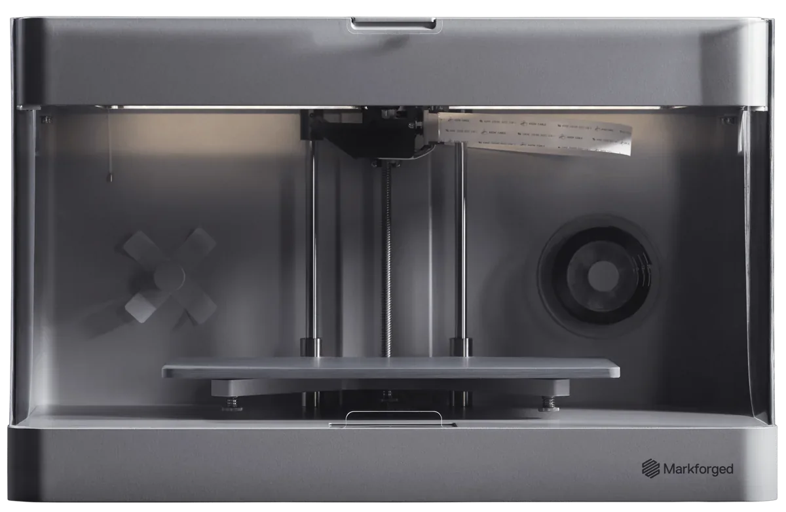
Desktop composite printer that lays continuous carbon, glass or Kevlar fibre inside Onyx parts.
6.5 L (Aniwaa's figure). Exact XYZ not stated on the sources checked
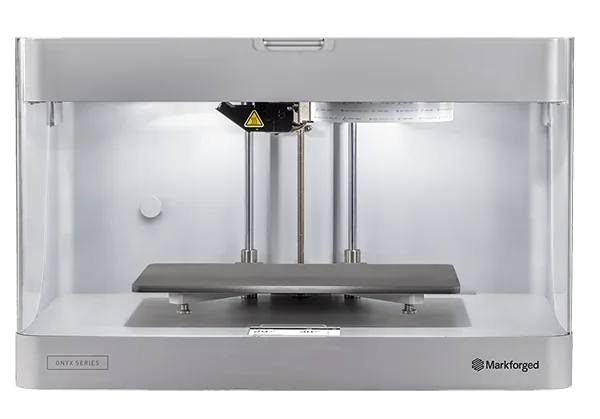
Desktop composite printer restricted to Markforged's chopped-carbon-fibre Onyx filament, with no continuous fibre.
12.6 x 5.2 x 6.1 in (approximately 320 x 132 x 155 mm)
Industrial continuous-fibre composite printer with laser-based in-process part inspection, the top of Markforged's X series.
330 x 270 x 200 mm (Aniwaa records 17.82 L)
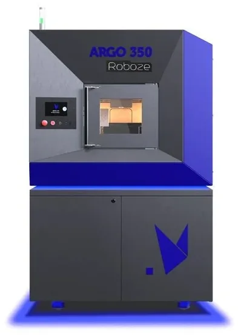
Italian-built single-extruder CoreXY with a 180 °C chamber and vacuum-held polymer build sheets for PEEK and ULTEM.
350 x 300 x 300 mm
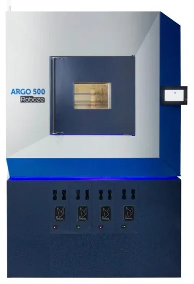
500 mm cube dual-extruder CoreXY with a 180 °C chamber, aimed at metal-replacement PEEK parts.
500 x 500 x 500 mm
Entry model of the Stratasys F123 series: same 254 mm cube as the F170 but a smaller cabinet and a much shorter material list.
254 x 254 x 254 mm (10 x 10 x 10 in)
Smallest full-cabinet F123: 254 mm cube, two internal spool bays and soluble QSR support.
254 x 254 x 254 mm (10 x 10 x 10 in)
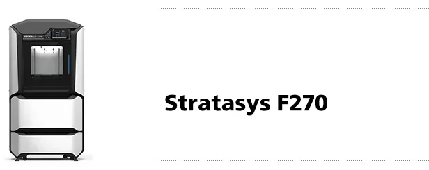
Mid-size F123 with a 305 x 254 x 305 mm envelope and four material spool bays.
305 x 254 x 305 mm (12 x 10 x 12 in)
Top F123: largest envelope, eight model materials, and the only member with Insight and DoD STIG-compliant print-data security.
355 x 254 x 355 mm (14 x 10 x 14 in)
UltiMaker's light-industrial machine: temperature-controlled 70 °C build volume, 340 °C print core and HEPA filtration.
330 x 240 x 300 mm

Dual-extrusion professional machine on 2.85 mm filament with swappable print cores and a glass bed.
330 x 240 x 300 mm
S5 successor with a PEI-coated flexible plate, inductive levelling and dual-band Wi-Fi.
330 x 240 x 300 mm
March 2025 flagship of the S-series with the Cheetah motion planner, 340 °C print cores and a 120 °C PEI plate.
330 x 240 x 300 mm
Check the model name, try its brand, or clear the filters to see the full library.
Specifications and prices retain their individual source dates. Build-volume text preserves catalog qualifiers; open a guide for the complete record and source links.